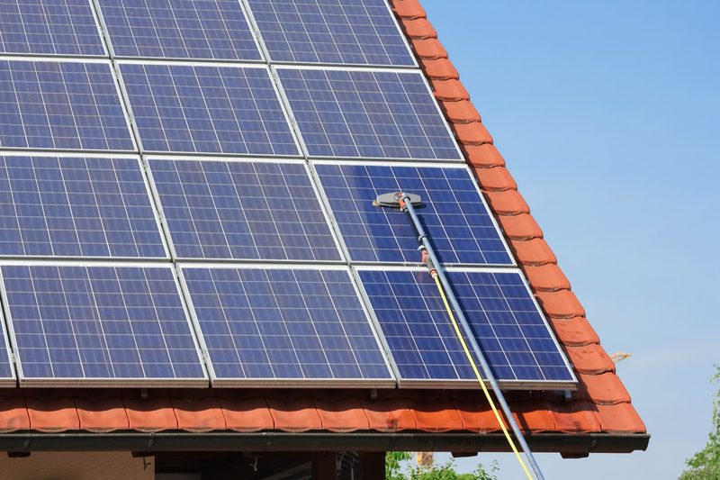
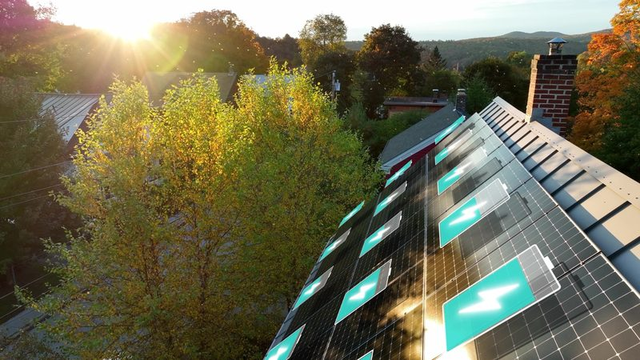
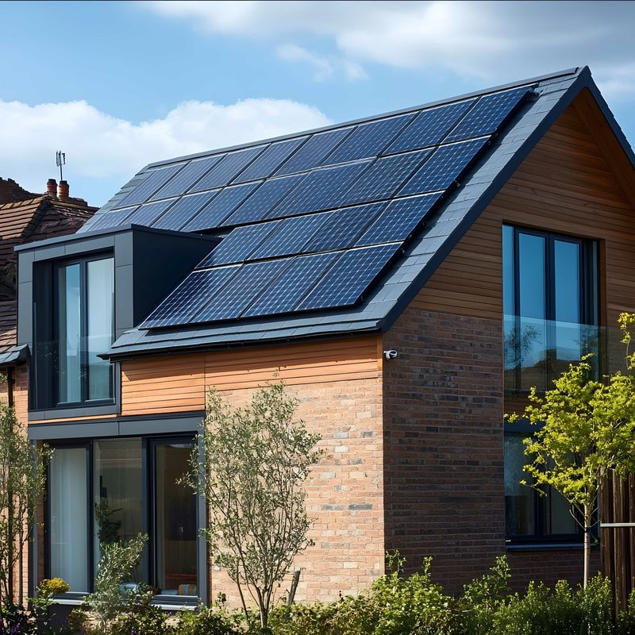

Showing all 6 articles

Solar Panel Maintenance and Replacement Costs: What Builders and Buyers Should Know
What’s the real cost of solar ownership? This guide breaks down UK solar panel maintenance and replacement costs – and compares leasing vs ownership to help builders and buyers plan for the long term.
Danielle Todd9 July 2025

Do You Need a Solar Battery? Benefits for New Build Homes
Rooftop solar is becoming mandatory – so what’s next? Discover how home batteries unlock energy independence, bigger savings, and long-term resilience – and how Gryd makes it simple, with no upfront cost.
Hugo Radford2 July 2025
How Onsite Battery Storage Can Solve Grid Constraints and Improve Project Viability
Facing grid constraints on your new build projects? Learn how on-site solar and batteries can cut connection costs, boost viability, and meet low-carbon planning goals – without waiting on grid upgrades.
Scott Whiteside25 June 2025
Solar Providers Compared: Gryd vs Zero Bills vs SNRG
Navigating solar options for new builds? This guide compares Gryd, Zero Bills, and microgrid solutions like SNRG – breaking down costs, ownership models, and resale impact – to help you choose the right fit for your project and buyers.
Scott Whiteside18 June 2025

A Simple Guide to Solar Leases: How They Work and Why They’re Growing
A new solar model is changing the game. Learn how Gryd’s modern solar lease makes it easy to future-proof homes, cut carbon, and fight fuel poverty – without upfront costs or maintenance hassle.
Danielle Todd11 June 2025

Mandatory Solar Panels in New Homes: What Housebuilders Need to Know About the 2027 Solar Requirement
Mandatory solar is coming by 2027. With the Future Homes Standard on the horizon, learn how fully funded solar solutions can help you stay compliant, meet buyer demand, and boost project viability – without the upfront cost.
Scott Whiteside4 June 2025
Nothing published in this category yet.
Read enough. Now put it against your own site.
A site assessment gives you system sizing per plot, the effect on EPC, and what the homeowner pays, before you commit to anything.
Request a site assessment